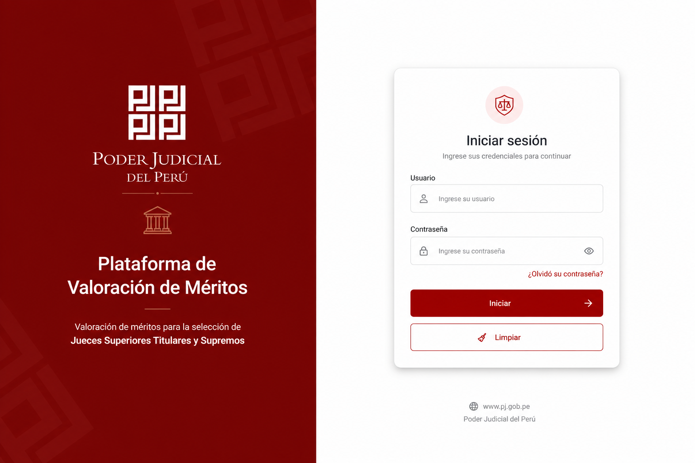
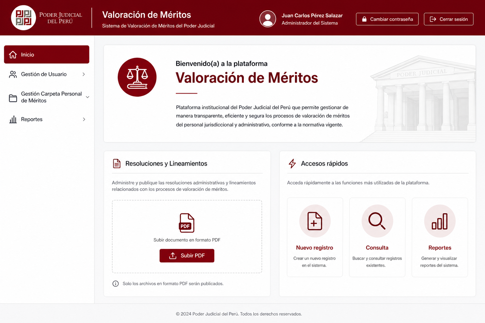
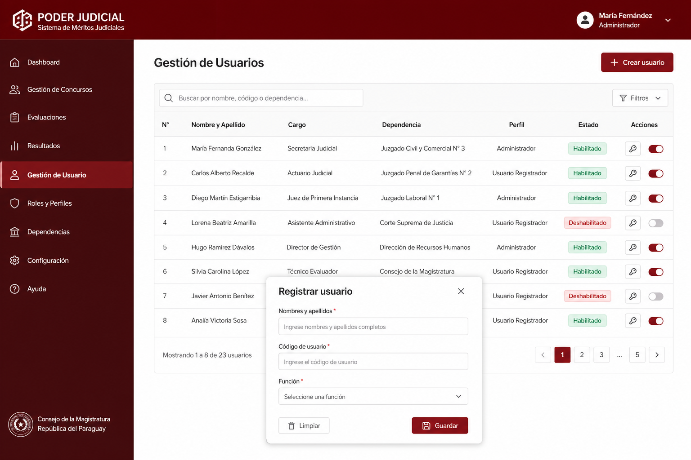
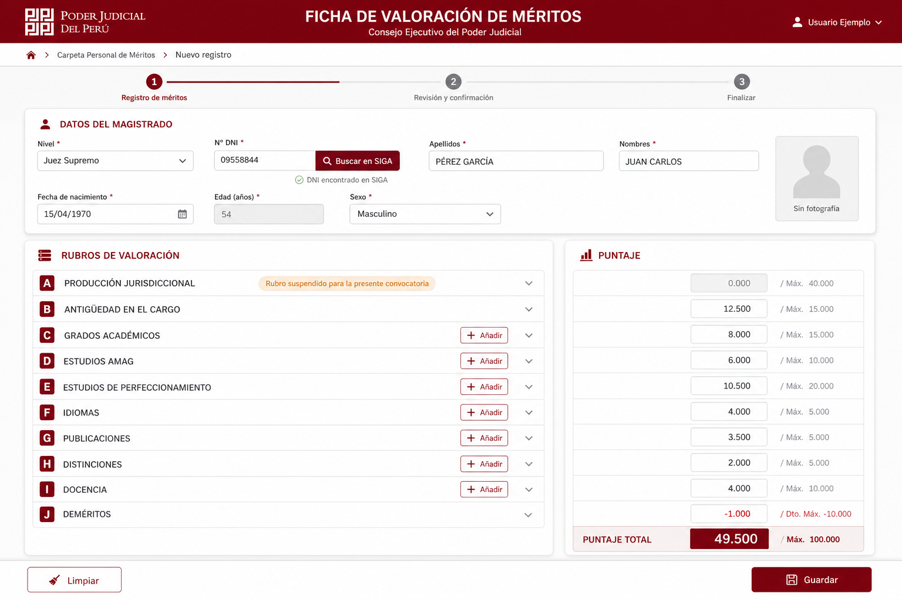
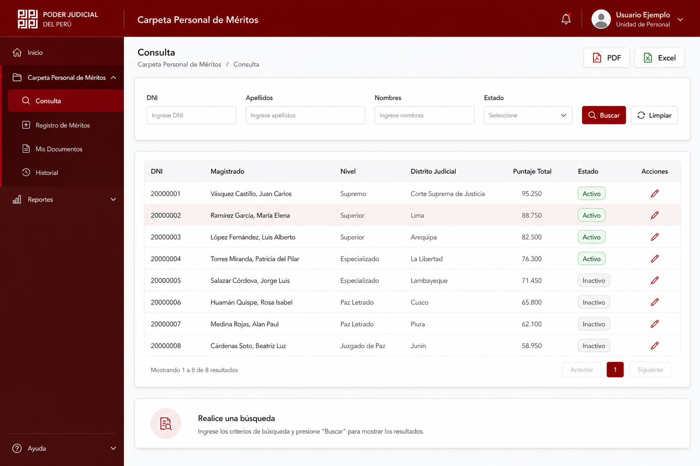
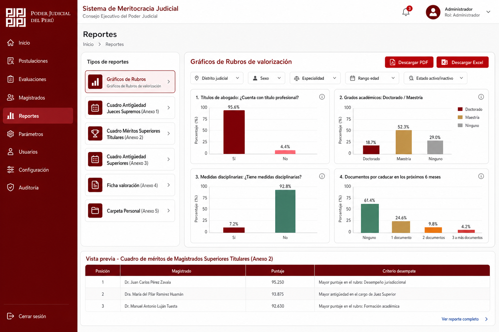
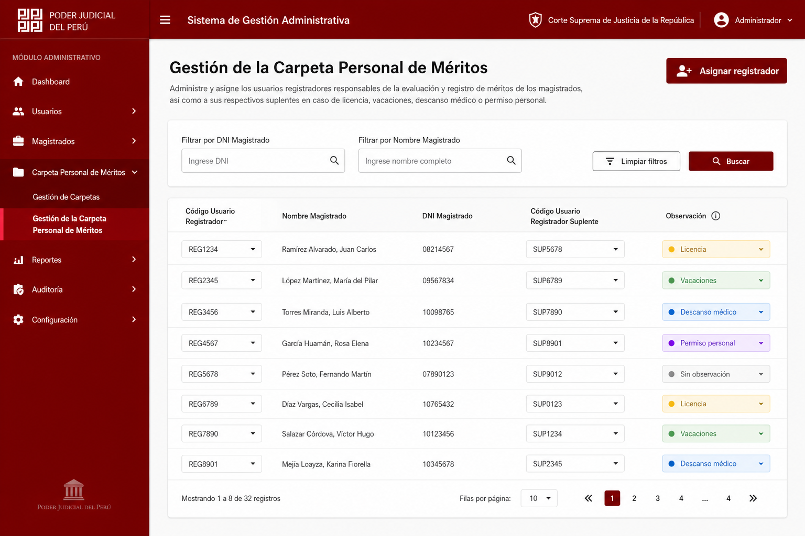
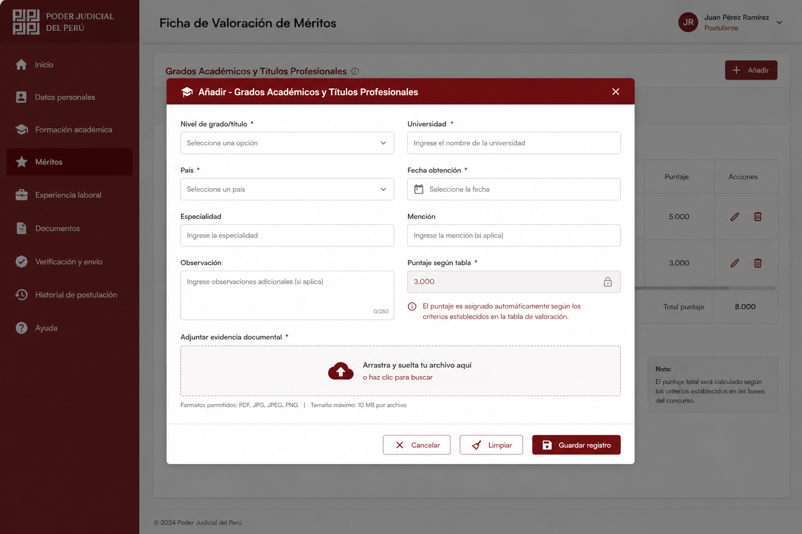

Proyecto SDSI-VMERIT-JSS-P-004-2026 · Marco 1440×900 px · Colores institucionales #8b0000
Diseño alineado al documento de requerimientos (RF001–RF009) · Perfiles Administrador y Usuario Registrador
Elija un flujo para recorrer las pantallas en orden. En cada pantalla use la barra inferior para avanzar o retroceder. Los botones de exportación y búsqueda muestran una simulación interactiva.
Todas las pantallas

01 — Login
02 — Inicio (Administrador)
03 — Gestión de Usuarios
04 — Ficha de Valoración
05 — Consulta
06a — Gráficos de rubros de valoración
07 — Carpeta Personal (Admin)
08 — Modal rubro C